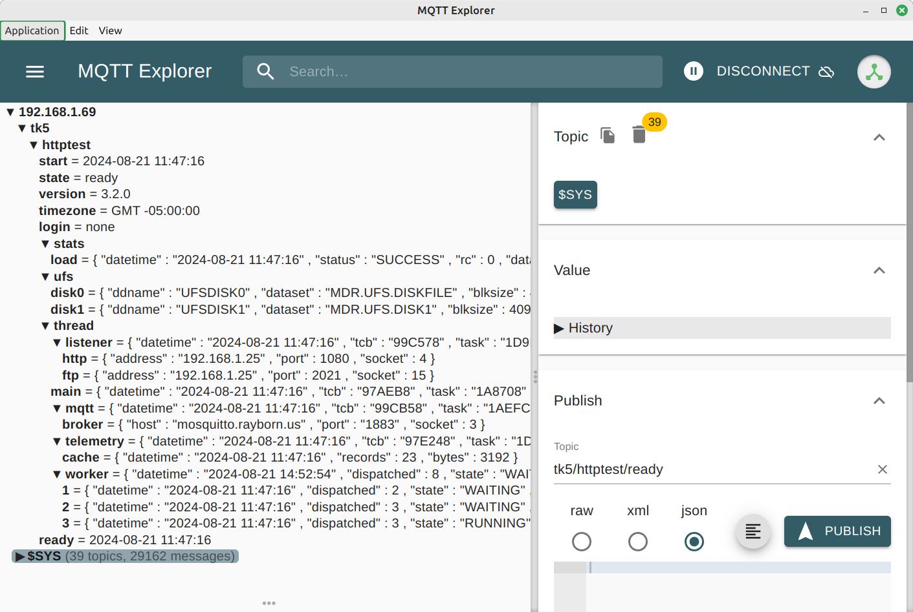

HTTPD Documentation
MQTT Message Queuing Telemetry Transport
This is a new feature starting with the HTTPD 3.2.0 release.
When MQTT is enabled (mqtt.start="1" in the HTTPD configuration) the HTTPD
server will connect to a MQTT broker and then publish topics to various
components of the HTTPD server.
See mqtt.start in the config.html document.
The default MQTT broker (mqtt.broker_host="test.mosquitto.org") can be
used if you don't have your own MQTT broker. You can install a free
MQTT broker by visting
https://mosquitto.org/download/
and selecting the correct version for your operating system.
If you install your own MQTT Broker then you'll need to adjust the mqtt
setting in the HTTPD server configuration to use your broker host name and
port number.
See mqtt settings in the config.html document.
Note: if you use the default broker "test.mosquitto.org" be sure
to set a topic prefix (mqtt.prefix="your/prefix/here") to aid in your testing.
Note: the "test.mosquitto.org" broker is very busy at times and may not
be able to process all topics posted by the HTTPD server. It may also
ignore the retain flag in the published topics as well as discarding
topics as it sees fit to do so. Fun for testing, but not reliable.
You may want to use MQTT Explorer
to view topics published by the HTTPD server.

MQTT Implementation
The HTTPD server makes use of MQTT370 functions. MQTT370 is a set of
wrapper functions all starting with "mqtt370_" that translate the EBCDIC
character string we use on MVS into ASCII strings and then calls the
"mqtt_" lower level functions to send/recv messages with the MQTT Broker.
In the HTTPD server we use a mqtt thread to perform the send/recv of messages
with the MQTT broker. See "thread/mqtt" in the next section below.
Most of the topics published by the HTTPD server use the MQTT_PUBLISH_QOS_0
and MQTT_PUBLISH_RETAIN flags in the publish call.
The MQTT_PUBLISH_QOS_0 flag tells the MQTT broker that confirmation from
the MQTT broker is not required. Think of it as send and forget from
the HTTPD servers viewpoint.
The MQTT_PUBLISH_RETAIN flag tells the MQTT broker that the topic should
be retained until it is explicitly deleted. This allows a subscriber
of HTTPD topics to receive those topics at a later date or time.
Most topics published by the HTTPD server are also cached and could be
used to refresh the current topic state if needed for some later enhancement.
Generally speaking we see less than 4K bytes being used to cache the
topics we publish.
Most of the HTTPD topics will be deleted when the HTTPD server is
terminated by the MVS STOP command "/p httpd".
MQTT Console Messages
These MQTT console messages are the ones you'll likely see when MQTT is working as expected.
- HTTPD421I MQTT Broker: %s Port: %s
- Connection to MQTT broker established for the specified broker_host and broker_port.
- HTTPD426I MQTT Topic Prefix: %s
- The Topic prefix is displayed as a reminder.
- HTTPD429I Terminating MQTT
- The MQTT threads are being terminated.
These MQTT console messages are the ones you might see if MQTT is disabled
or fails to start.
- HTTPD420I MQTT mqtt.start not enabled in config
- The MQTT Client will is not enabled. This is the default behavior.
- HTTPD421E MQTT Failed to open socket. Broker: %s Port: %s
- The HTTPD server was unable to open the MQTT Broker using the broker_host and broker_port values.
- HTTPD422E MQTT Unable to allocate client handle
- Bad news! We're likely out of memory!
- HTTPD423W MQTT Unable to set reconnect values
- Also bad news! We're likely out of memory!
- HTTPD424E MQTT Unable to connect with MQTT broker
- We have an open socket connection with the MQTT broker but we're unable to complete the connection with the MQTT Broker.
- HTTPD425E MQTT Unable to start MQTT Subtask
- Something has gone very wrong. Maybe we're out of memory!
MQTT Topics Published by HTTPD
- start
- The date and time when the HTTPD server was started.
- state
- The current execution state of the HTTPD server
(start, ready, quiesce, shutdown).
- version
- The software version of the HTTPD server.
- timezone
- The time zone of the HTTPD server.
- login
- The login requirements for this server.
(none, cgi, get, head, post, all)
- stats
- The response statistics for the HTTPD server.
- stats/load
- JSON values when the response statistics was loaded."
- stats/save
- JSON values when the response statistics was saved.
- ufs
- The Unix "like" File System used by the HTTPD server.
- ufs/disk#
- JSON values for each disk (0-9) being used by the HTTPD server.
- thread
- Thread (subtask) running under control of the HTTPD server.
- thread/listener
- JSON values for the TCPIP socket listener thread.
- thread/listener/http
- JSON values for the HTTP protocol.
- thread/listener/ftp
- JSON values for the FTP procotol.
- thread/main
- JSON values for the HTTP main thread.
- thread/mqtt
- JSON values for the MQTT Client that does send/recv for published topics.
- thread/mqtt/broker
- JSON values for the MQTT Broker used bt the MQTT Client.
- thread/telemetry
- JSON values for the Telemetry thread.
- thread/telemetry/cache
- JSON values for the Telemetry cache of topics published by the HTTPD server.
- thread/worker
- JSON values for the thread manager.
- thread/worker/#
- JSON values for each worker thread running under the control of the thread manager.
- ready
- The date and time when the HTTPD server was ready.
- quiesce
- The date and time when the HTTPD server was quiesced.
- shutdown
- The date and time when the HTTPD server was shutdown.